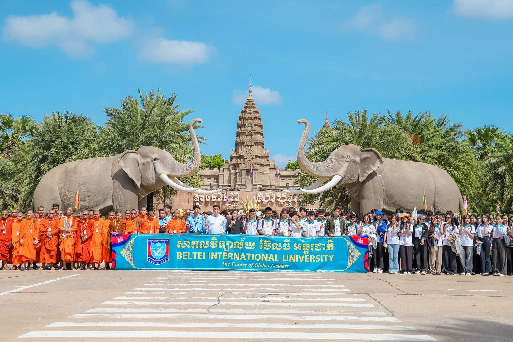
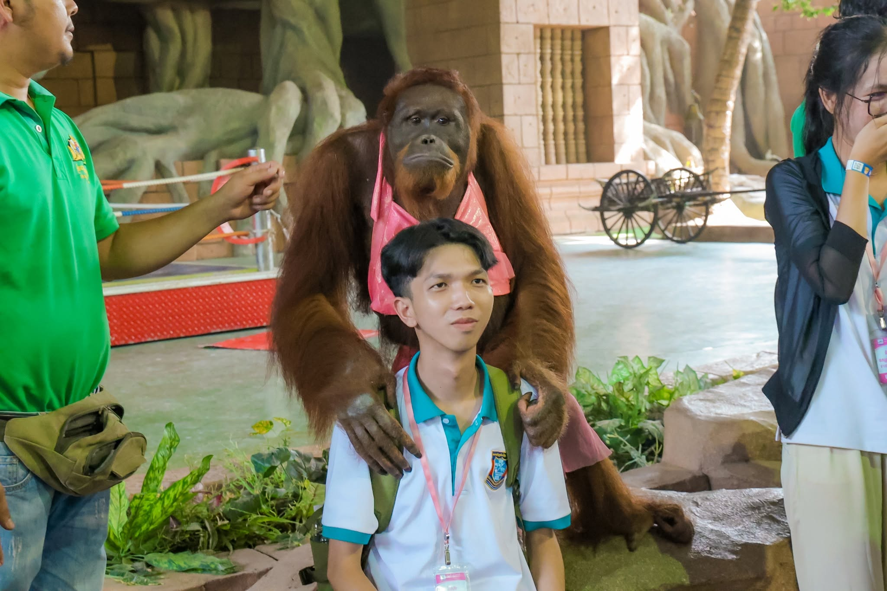

និស្សិតសាកលវិទ្យាល័យ ប៊ែលធី អន្តរជាតិ ឆ្នាំទី១ ឆមាសទី២ ចំនួន ៤,១៧០នាក់ ធ្វើដំណើរទស្សនកិច្ចសិក្សាទៅកាន់សួនសត្វ ភ្នំពេញសាហ្វារី (១ថ្ងៃ វិលល្ងាច) !! នេះជាសកម្មភាពនិស្សិតសាកលវិទ្យាល័យ ប៊ែលធី អន្តរជាតិ (ទីតាំងទី១-ទួលស្លែង) ឆ្នាំទី១ ឆមាសទី២ (វេនល្ងាច និងថ្នាក់សៅរិ៍-អាទិត្យ) ចំនួន ៣២០នាក់ ធ្វើដំណើរទស្សនកិច្ចសិក្សាទៅកាន់សួនសត្វ ភ្នំពេញសាហ្វារី (១ថ្ងៃ វិលល្ងាច) ។ ដោយធ្វើដំណើរទៅទស្សនាកន្លែងសំខាន់ៗដូចជា៖ ទស្សនាការសម្ដែងដ៏ឆ្លាតវៃរបស់ សត្វសេក សត្វខ្លា សត្វចម្រុះ សត្វដំរី សត្វក្រពើ និងទស្សនាការសម្ដែងដ៏ដ៏កំប្លុកកំប្លែងរបស់សត្វអ៊ូរ៉ង់ អ៊ូតង់ ផងដែរ។
ដំណើរទស្សនកិច្ចសិក្សានេះ បានរៀបចំឡើងក្នុងគោលបំណង៖
១. ជំរុញការសិក្សារបស់និស្សិតឱ្យផ្សារភ្ជាប់ជាមួយធម្មជាតិ និងជីវចម្រុះ
ព្រមទាំងបណ្តុះស្មារតីស្រឡាញ់ និងចូលរួមអភិរក្សសត្វព្រៃគ្រប់ប្រភេទ។
២. ផ្តល់ឱកាសឱ្យនិស្សិតបានសិក្សាស្វែងយល់អំពីប្រភេទសត្វផ្សេងៗ ការរស់នៅ
និងការថែទាំសត្វនៅក្នុងសួនសត្វ តាមរយៈការទស្សនាផ្ទាល់។
៣. បង្រៀនឱ្យនិស្សិតចេះស្រឡាញ់ ថែរក្សា និងការពារបរិស្ថានធម្មជាតិ ។ ៤.
ជំរុញឱ្យនិស្សិតចូលរួមផ្សព្វផ្សាយសក្តានុពល និងភាពទាក់ទាញនៃតំបន់ទេសចរណ៍ និងសួនសត្វនៅកម្ពុជា
ទៅកាន់សាធារណជន និងភ្ញៀវទេសចរ។
៥. បង្កើតបរិយាកាសឱ្យនិស្សិតសប្បាយរីករាយ មានសាមគ្គីភាព បង្កើនភាពស្និទ្ធស្នាល
និងចេះប្រស្រ័យទាក់ទងគ្នាផងដែរ។
ដំណើរទស្សនកិច្ចសិក្សានេះ បានប្រព្រឹត្តទៅនាថ្ងៃសៅរិ៍ ៧កើត ខែជេស្ឋ ឆ្នាំមមី អដ្ឋស័ក ពុទ្ធសករាជ
២៥៧០ ត្រូវនឹងថ្ងៃទី២៣ ខែឧសភា ឆ្នាំ២០២៦ ដោយធ្វើដំណើរតាមរយៈរថយន្តប៊ែលធី ទេសចរណ៍។ #BELTEI_IU
#PhnomPenhSafari

